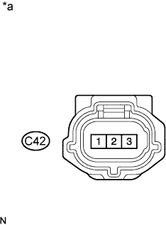
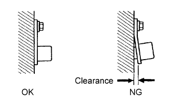

DTC P0335 Crankshaft Position Sensor "A" Circuit |
DTC P0337 Crankshaft Position Sensor "A" Circuit Low Input |
DTC P0338 Crankshaft Position Sensor "A" Circuit High Input |
DTC P0339 Crankshaft Position Sensor "A" Circuit Intermittent |
| DTC No. | DTC Detection Condition | Trouble Area |
| P0335 | Either condition is met:
|
|
| P0337 | Output voltage of crankshaft position sensor is 0.3 V or less for 4 seconds (1 trip detection logic). |
|
| P0338 | Output voltage of crankshaft position sensor is 4.7 V or higher for 4 seconds (1 trip detection logic). |
|
| P0339 | Under conditions (a), (b) and (c), no crankshaft position sensor signal is sent to the ECM for 0.05 seconds or more (1 trip detection logic): (a) Engine speed is 1000 rpm or more. (b) Starter signal is off. (c) 3 seconds or more have elapsed since the starter signal switched from on to off. |
|
 |
| Tester Connection | Tool Setting | Condition | Specified Condition |
| C28-6 (NE+) - C28-5 (NE-) | 5 V/DIV., 20 msec./DIV. | Cranking or idling | The correct waveform is as shown |
| C28-9 (G2) - C28-10 (G2-) | 5 V/DIV., 20 msec./DIV. | Cranking or idling | The correct waveform is as shown |
| Required sensors/Components (Main) | Crankshaft position sensor |
| Required sensors/Components (Related) | Camshaft position sensor |
| Frequency of operation | Continuous |
| Crankshaft position sensor |
|
| 1.READ VALUE USING INTELLIGENT TESTER (ENGINE SPEED) |
Connect the intelligent tester to the DLC3.
Turn the engine switch on (IG).
Turn the tester on.
Enter the following menus: Powertrain / Engine and ECT / Data List / All Data / Engine Speed.
Start the engine.
Read the values displayed on the tester while the engine is running.
|
| ||||
| OK | ||
| ||
| 2.INSPECT CRANKSHAFT POSITION SENSOR (SENSOR POWER SOURCE) |
|  |
Disconnect the crankshaft position sensor connector.
Measure the voltage according to the value(s) in the table below.
| Tester Connection | Switch Condition | Specified Condition |
| C42-3 - Body ground | Engine switch on (IG) | 4.5 to 5.0 V |
| *a | Front view of wire harness connector (to Crankshaft Position Sensor) |
|
| ||||
| OK | |
| 3.CHECK HARNESS AND CONNECTOR (CRANKSHAFT POSITION SENSOR - ECM) |
Disconnect the crankshaft position sensor connector.
Disconnect the ECM connector.
Measure the resistance according to the value(s) in the table below.
| Tester Connection | Condition | Specified Condition |
| C42-1 - C28-6 (NE+) | Always | Below 1 Ω |
| C42-2 - C28-5 (NE-) | Always | Below 1 Ω |
| C42-1 or C28-6 (NE+) - Body ground | Always | 10 kΩ or higher |
| C42-2 or C28-5 (NE-) - Body ground | Always | 10 kΩ or higher |
|
| ||||
| OK | |
| 4.CHECK SENSOR INSTALLATION (CRANKSHAFT POSITION SENSOR) |
|  |
Check the crankshaft position sensor installation.
|
| ||||
| OK | |
| 5.INSPECT CRANKSHAFT ANGLE SENSOR ROTOR (TEETH OF SENSOR ROTOR) |
Check the teeth of the sensor rotor.
|
| ||||
| OK | |
| 6.REPLACE CRANKSHAFT POSITION SENSOR |
Replace the crankshaft position sensor (Click here).
| NEXT | |
| 7.CHECK WHETHER DTC OUTPUT RECURS (DTC P0335, P0337, P0338 AND/OR P0339) |
Connect the intelligent tester to the DLC3.
Turn the engine switch on (IG).
Turn the tester on.
Clear DTCs (Click here).
Start the engine.
Enter the following menus: Powertrain / Engine and ECT / DTC.
Read DTCs.
| Result | Proceed to |
| No DTC is output | A |
| P0335, P0337, P0338 or P0339 is output | B |
|
| ||||
| A | ||
| ||
| 8.CHECK HARNESS AND CONNECTOR (CRANKSHAFT POSITION SENSOR - ECM) |
Disconnect the crankshaft position sensor connector.
Disconnect the ECM connector.
Measure the resistance according to the value(s) in the table below.
| Tester Connection | Condition | Specified Condition |
| C42-3 - C28-16 (VCV2) | Always | Below 1 Ω |
| C42-3 or C28-16 (VCV2) - Body ground | Always | 10 kΩ or higher |
|
| ||||
| OK | ||
| ||